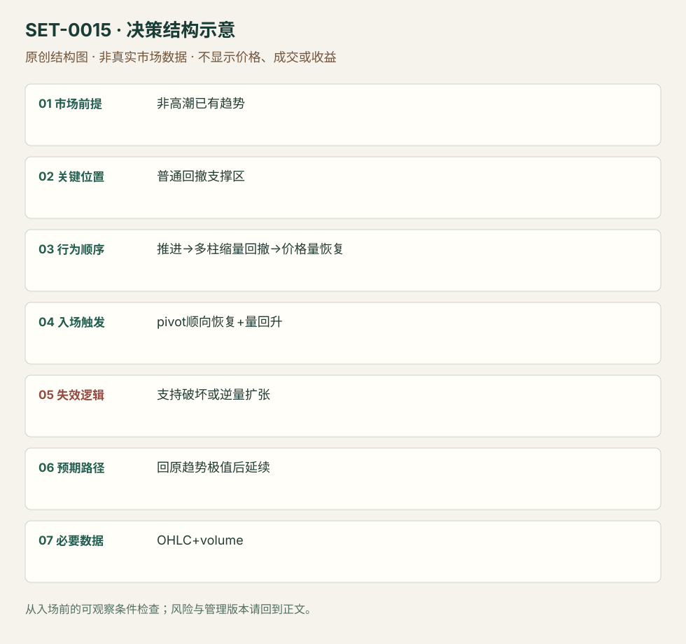

缩量普通回撤后的成交恢复
Low-Volume Pullback · SET-0015 · reviewed · v1.0.0
盈利证据：not_established。审查范围与来源版本见第13节；未知字段保留缺失原因。
1. 名称与快速概览
已有方向推进之后形成普通多柱回撤，逆向成交逐渐减少；关键支撑仍在且顺向成交重新出现时考虑延续。回撤支持区破坏或逆向成交扩张否定。
记录口径：PA core；必要数据 OHLC、volume。名称性质：编辑性描述名，英文保留来源术语以便检索。reviewed 只表示本条规则与证据记录审查通过，盈利状态为 not_established。
2. 本质与行为假说
成交量降低说明活动下降，不能仅凭它断言卖盘全消失或有人吸筹。恢复成交与价格响应必须同时检查。
3. 适用市场与环境
已建立有空间的趋势、非高潮末端；回撤结构较有序。午间普遍低量须与同时间季节性区分，不能直接当方向优势。
来源实用市场：美股1分钟（SAI）、日线股票/ETF（Galen背景例）。
Session：美股/ES现金参考段 09:30–16:00 America/New_York；收盘前平仓。期货夜盘单独建背景，不将其并入开盘区间。
跨市场：本版不主张已经验证的跨市场迁移；更换市场必须重定数据来源、流动性与session。
4. 出现前的观察清单
必要：先前方向冲击、普通回撤、量能相对下降、支持区未破。增强：回测旧水平且恢复量增加。否决：高潮量之后急跌、刚开盘量自然下降或数据遗漏。
5. 形成过程与状态转换
方向推进→数柱普通回撤→量弱且支持仍在→顺向价格/成交恢复→入场管理；逆向量加速则取消。
6. Entry trigger 与执行方式
SAI用回撤pivot上方买盘增强、趋势恢复触发；Galen日线版的量带筛选只作背景研究，不套到分钟图。量回升但价格不动可能为吸收，不能自动买。
7. Invalidation 与止损逻辑
回撤pivot/支持区破坏否定本次承接，订单保护围绕它而非量能百分比。逆向放量是撤销触发或提早退出理由，不代替硬结构风险。
8. Exit、target 与 trade management
先观察事前已有日内高低点及下一阻力；触及后弱跟随可分批。强趋势才测试结构跟踪；SAI数柱延伸退出和Galen长目标分属不同模块。
9. 常见 variations
ABCD、普通bull/bear flag与本条若核心是缩量承接则合并；不因EMA换参数另计。两段并不是本条必要条件。
10. 失败方式与不交易条件
正常亏损：量弱回撤后再次破支持。未成立：高潮末端或只看一根低量柱。偏离：用当日最终量归一化历史信号，形成前视偏差。股票分笔成交量与外汇tick量不等价。
11. 与相近 setups 的区别
12. 图表与案例解读
已查看SAI页22的FirstRetest图：先突破，回撤至参考线附近的小柱与低量可见，蓝箭头处买盘恢复，右侧再涨。它说明日内执行背景；Galen SPLS反例是日线高潮，不能冒充已查看的日内败例。量栏来自图表，不提供逐笔交易者身份。
- [VIS-000016] 来源PDF第22页图表；定位：PDF页序 22。First Retest案例的弱量回撤与恢复；价格边界与量能共同观察。 验证：chart_viewed_pdf_page。
本地原创示意（VIS-000072，非真实市场数据）：

小屏阅读可打开原尺寸示意图并缩放。

此图用于对照识别顺序与风险定义；不计入真实案例覆盖率。
视觉材料元数据与查看范围
- VIS-000016 · real_source_chart / structure_and_trigger / chart_viewed_pdf_page
品种：未知/不适用；日期：未知/不适用；周期：1分钟；时区：未知/不适用
品种未在画面中核对；日期未在画面中核对；时区未在画面中核对；作者示例；不是独立成交审计 - VIS-000072 · synthetic_structure_diagram / illustration_only / generated_not_market_evidence
品种：未知/不适用；日期：未知/不适用；周期：未知/不适用；时区：未知/不适用
无真实品种、日期或价格：这是结构示意
13. 证据、分歧与未知项
日线例与分钟例不能合成统一阈值。已标出两来源的周期差异；管理依版本记录，没有成本后胜率。
- [EVD-000025] Galen Woods，《Low Volume Pullback Strategy (Expanded)》，SRC-0020；定位：GME、SPY与SPLS三案例。支持：顺势回撤时量能降低，恢复时量回升；高潮背景反例
- [EVD-000026] SAI Trades，《My Experience: Trading the Open Playbook》，SRC-0013；定位：PDF页22、24–25。支持：日内首回撤至少数柱，回撤量弱，支撑上方买盘重新增强
审查边界：来源份数与独立核心核验分开；当前类别为 independent_context_only。正文中的概念、官方事实、衍生解说或同族资料只按其支持范围使用。
14. 可用于复盘的检查表
- ☐ 下单前的前提可核对：非高潮已有趋势
- ☐ 事前标记位置：普通回撤支撑区
- ☐ 行为按顺序出现：推进→多柱缩量回撤→价格量恢复
- ☐ 实际触发符合选定版本：pivot顺向恢复+量回升
- ☐ 事先写明本次否定条件：支持破坏或逆量扩张
- ☐ 目标/路径只用当时已知信息：回原趋势极值后延续
- ☐ 数据满足 OHLC+volume；记录时间、点差、滑点、队列和未成交
- ☐ 记录截止平仓及规则偏离；正常亏损不事后改成“未成立”
15. 后续验证问题
使用同时间历史成交量归一化，比较纯价格版本；检验量减是否只是午间季节性。
双向相关导航
- SET-0006 趋势中的两段回撤第二次入场 缩量回撤需要量能退潮，不要求两次恢复；本条必须两段。
- SET-0009 强推进后的首次微型回撤 缩量多柱回撤已经有普通反向摆动，本条只处理强推进的第一次短暂停顿。
- SET-0028 新消息后的第二日关键位接受 0015 是普通趋势的低量回调；本条必须前日重大信息和次日的关键位接受，不能只加一个news标签。
- SET-0029 突发新闻的第一轮价格反应 新闻第一轮后的普通小回调是0015事件版本，不能重复计数。